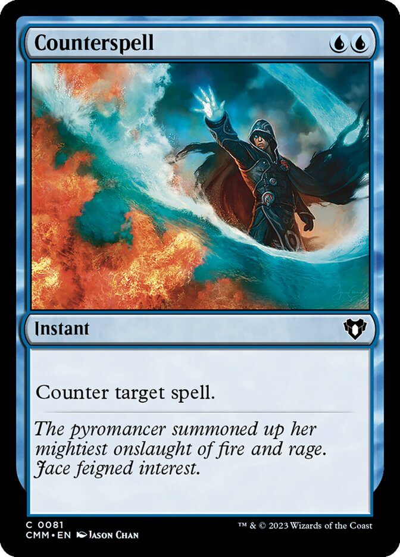
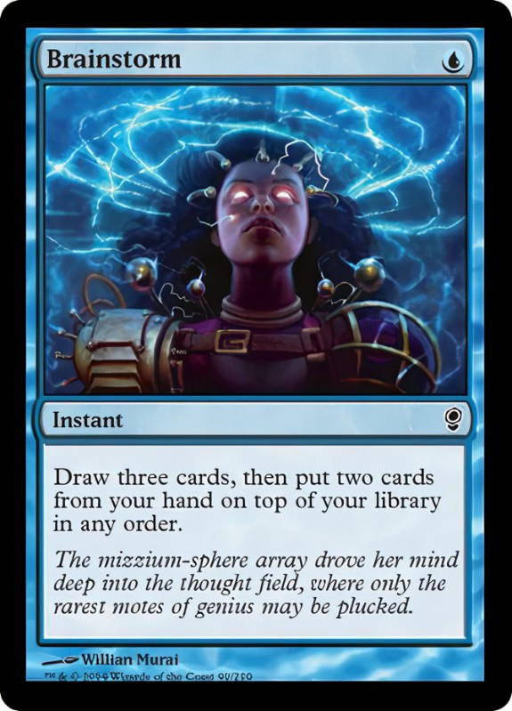
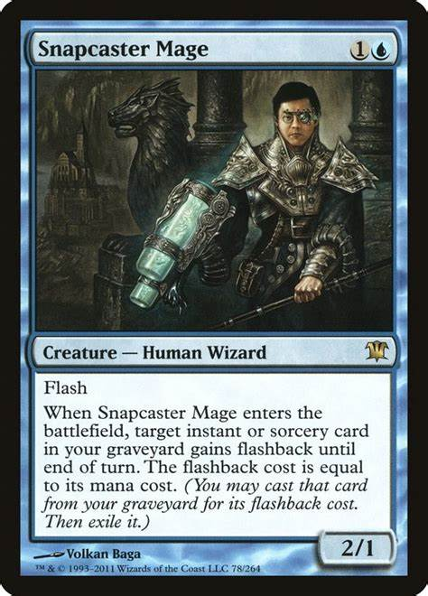

Azul: Conhecimento, manipulação e ilusão
Teoria: O azul valoriza o conhecimento, a sabedoria e o controle mental. A cor busca a perfeição por meio do entendimento e manipulação da realidade. O azul acredita que tudo pode ser controlado com inteligência.
Na prática: O azul é excelente em controlar o jogo, com foco em mill de cartas (jogar cartas do topo do deck para o cemitério), anulação de feitiços e manipulação do deck. Ele também é famoso por suas cartas que permitem "comprar" mais cartas e ter mais opções.
Exemplo de cartas: Counterspell, Brainstorm, Snapcaster Mage.


